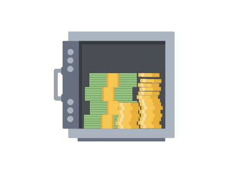

A Renda Fixa representa uma dívida, significa emprestar dinheiro para alguém que te pagará com juros. Esse tipo de investimento é fixado a um indicador, por isso o nome "fixa". Na Renda Fixa há oscilações como em todos os outros investimentos, sendo um reflexo do mercado.
Títulos com taxa fixa determinada no momento do empréstimo, nesse caso, para escolher esse título e ter em sua carteira é na queda da inflação.
Apresenta oscilações relevantes de preço dia a dia. Pode oscilar entre surpresas positivas ou negativas. No fim das contas, entrega o retorno prometido.
Títulos com rendimento atrelado a um indicador, como o Índice de Preços ao Consumidor Ampliado (IPCA), o Certificado de Depósito Interbancário (CDI) ou a taxa Selic.
Não decepciona, mas também não surpreende positivamente. Não há oscilação de preço relevante. Não surpreende em termos de retorno.
Títulos que pagam uma taxa somado da inflação acumulada no período, garante proteção contra surpresa inflacionária, o melhor momento é na subida da inflação.
Apresenta oscilações que podem ser muitos altas. O resultado pode ser muito melhor que o esperado, ou não. Se fosse comparado a um funcionário, seria aquele sem medo de inovar.
CDI (certificado de depósito bancário) é o principal índice da Renda Fixa e de todo mercado. É uma Taxa de remuneração de empréstimo interbancário.
IMA-B5 é o índice que acompanha o retorno de uma cesta de títulos públicos indexados à inflação que vencem em até 5 anos, as oscilações são bem comedidas.
Ter Títulos Públicos significa emprestar diretamente seu dinheiro para o Tesouro Nacional, e se quiser vender o título antes do vencimento, você os revende, mas é recomendável ir até o fim.
Títulos Privados é o índice que acompanha o retorno de uma cesta de títulos públicos indexados à inflação que vencem em até 5 anos, as oscilações são bem comedidas.
SELIC é a taxa básica de juros da economia. É o principal instrumento de política monetária utilizado pelo Banco Central (BC) para controlar a inflação.
A diferença entre a Renda Fixa e a Renda Variável é que a última significa participar de um determinado bem, se tornar sócio (ações).
Os TÍTULOS EMITIDOS POR EMPRESAS (sem proteção) são: DEBÊNTURES (título de dívida, podem ou não ter imposto); CRI (certificados de recebíveis do setor imobiliário); CRA (certificados de recebíveis do agronegócio).
Os TÍTULOS EMITIDOS POR BANCOS (proteção FGC) são o LCI (Letra de Crédito Imobiliário) e o LCA (Letra de Crédito do Agronegócio).
O FGC (Fundo Garantidor de Crédito) é uma instituição privada, sem fins lucrativos, cuja missão é proteger investidores no âmbito do sistema financeiro nacional e prevenir o risco de uma crise bancária sistêmica.
O Tesouro Direto é um tipo de investimento de renda fixa, ou seja, no momento da aplicação, você sabe quanto vai receber se mantiver o título até a data de vencimento. Mas isso não quer dizer que os preços e taxas dos títulos são constantes ao longo do tempo.
O Tesouro Selic é destinado à reserva de emergência (2022), ao dinheiro que você ainda não sabe o que fazer com ele, ou até mesmo à viagem que você quer fazer (2024). Ele te remunera todos os dias.
O Tesouro IPCA+ é destinado à proteger seu dinheiro da alta da inflação, pois sempre ficará acima dela. Ele possui a categoria que não possui "Juros Semestrais" e outra que tem. Esses "Juros Semestrais" são valores pagos a cada 6 meses, mas não é recomendado para quem busca acumular riquezas, visto que o dinheiro que foi pago a você poderia render sobre ele mesmo. O Tesouro IPCA+ pode ser útil para comprar a casa própria (2040) ou aposentadoria (2050). O IPCA+ com Pagamento Semestral é pra quem quer viver de renda.
O Tesouro Prefixado é destinado à proteger seu dinheiro da baixa da inflação. Assim como o IPCA+, ele possui a opção da categoria "Juros Semestrais". Esse é recomendado para quem quer viver de renda fixa, enquanto que o outro, assim como o IPCA+, pode ser usado para comprar a casa própria (2040) ou aposentadoria (2050).
Para acumular riquezas, basta fazer aporte mensal e não retirar o dinheiro antes, pois ele irá render Juros sobre Juros de cada aporte + juros passados + capital inicial.
Outra forma de fazer dinheiro com Tesouro Direto é a MARCAÇÃO À MERCADO utilizando o Tesouro IPCA+, que nada mais é que comprar o Tesouro quando estiver com juros altos (se os juros estão altos, então o preço do Título está baixo, pois há pouca busca/demanda). Dessa forma, quando o juros estiver baixo, a demanda estará alta, valorizando assim o título. Como é utilizado o modelo PEPS (primeiro que entra, primeiro que sai), ou seja, o título que você comprou primeiro será o primeiro que será vendido, você basicamente terá comprado barato e estará vendendo caro.
1) Encontre os quartis dos juros do Tesouro.
2) Encontre uma corretora diferente da que você usa para acumular seu capital (reserva de emergência e outros), pois o primeiro que entra é o primeiro que sai (se você comprou a um preço alto porque só quer acumular riqueza, caso inicie a marcação a mercado na mesma corretora, você venderá o primeiro título (preço/juros) que você comprou nessa mesma corretora.
3) Compre quando os juros atingirem o 3º quartil ou ultrapassar.
4) Venda quando os juros atingirem o 1º quartil ou ultrapassar.
Assista a este vídeo caso você saiba NADA sobre investimento e quer entender melhor sobre cada item
Entenda a diferença entre investir em CDB e LCI/LCA, qual é mais vantajoso e ONDE você deve investir HOJE
Investindo na prática, comparativo entre diferentes oportunidades de investimento e a proteção FGC
Como diversificar a carteira (indexadores, emissores e vencimentos) a fim de obter maior lucro e segurança
Quem são: IMA-B; IMA-B5; IRF-M; IMA-S; IDKA, e o que esses índices nos revelam
Indicador IMA B, saiba quando investir em títulos com esses indicadores
Explicando IPCA+, PREFIXADO e Selic
Tesouro Direto explicativo